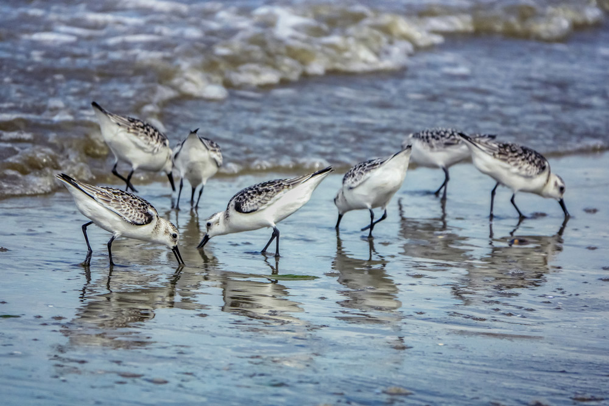
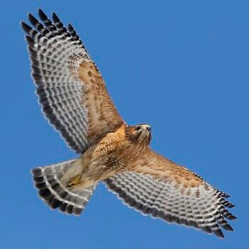

Backyard birds are the ones you're most likely to encounter right outside your home, or in generally residential areas. They tend to be fairly small in size, and you might hear them singing and chirping outside your window every morning. This category of bird includes a wide range of species such as songbirds, hummingbirds, woodpeckers, doves, and more. Many build their nests in trees or shrubs, so next time you're outside your home, look to the trees, and chances are you might find a few hopping across the branches! Follow the link on the image to learn more about backyard birds.
Shore birds are commonly found along coastlines, lakes, rivers, and other bodies of water. If you've ever spent time at the beach, you've likely seen them swimming in the ocean or gliding over the waves. This category includes birds such as ducks, geese, and gulls, all of which have adapted to life in or near water. Their behaviors, from diving in the water to foraging in the sand, make them especially interesting to watch in their natural habitats. Follow the link on the image to learn more about shore birds!


Birds of prey are the powerful, often large birds known for their impressive hunting abilities. They are generally characterized by their hooked beaks, powerful talons, and large wingspans. These are the birds you'll see soaring high in the sky, or perched on a rooftop while scanning the ground for prey. They are skilled hunters, feeding on smaller animals and other birds. While they are often seen in open areas, don't count out the possibility of seeing a few in the skies near your house, or even perched in your backyard! Follow the link on the image to learn more about birds of prey.